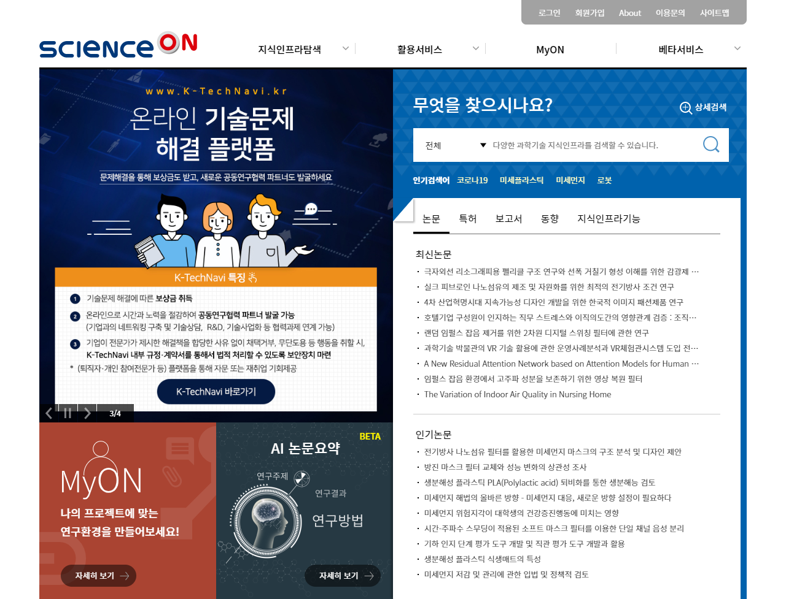

이슈로보는R&D
국가적 현안과 사회적 이슈를 선정하여
주제별 국가R&D 관련 정보를 패키지 형태로 제공합니다.
미세먼지
나노입자
검출
장내미생물
천연가스
리튬
황전지
출처:국가과학기술지식정보서비스(NTIS)
더보기
현재 날씨
온천2동
15:30발표
더보기
20
℃
흐림
15시 현재
강수량
0.0mm
미세먼지
좋음
초미세먼지
좋음
오존
보통
오늘의 일정
2020. 06. 17.
· 14:00 오전회의
최신 뉴스
더보기
· 한국생명공학연구원 코로나19 A to Z
· 한국한의학연구원 코로나19 일일 리포트
· 기초과학연구원 코로나19 과학리포트